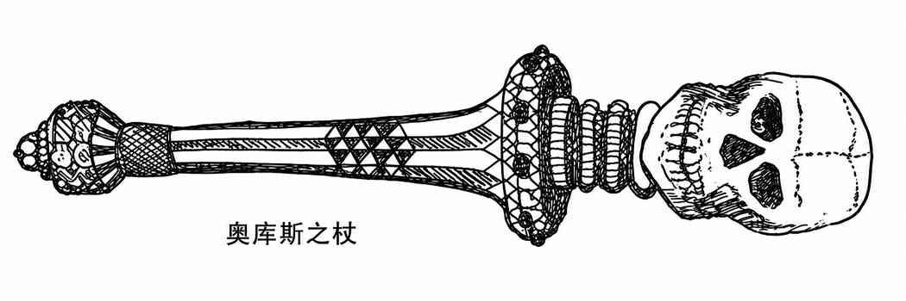

奥库斯 · Orcus

| 项目 | 数据 |
|---|---|
| 出现频率 | 极罕见 |
| 出现数量 | 1 |
| 护甲等级 | −6 |
| 移动力 | 9 寸／18 寸（飞行） |
| 生命值 | 120 点 |
| 在巢穴概率 | 50% |
| 财宝类型 | P、S、I、U |
| 攻击次数 | 2 |
| 攻击伤害 | 见下文 |
| 特殊攻击 | 见下文 |
| 特殊防御 | 仅 +3 或更好的武器可命中 |
| 魔法抗性 | 85% |
| 智力 | 超高智力 |
| 阵营 | 混乱邪恶 |
| 体型 | L（高 15 尺） |
| 灵能能力 | 350；攻击／防御模式：全／全 |
奥库斯的张掌拍击造成 1–4 点伤害，拳击造成 3–13 点伤害；若使用武器，则命中检定获得 +6，伤害获得 +8。它的尾巴末端有毒刺，被刺中的目标对抗毒素的豁免检定承受 −4 惩罚；奥库斯以敏捷 18进行尾刺攻击，造成 2–8 点伤害。
奥库斯每轮可以任选下列能力之一：持续黑暗术、魅惑人类、制造幻象、造成恐惧、侦测魔法、阅读魔法或语言、侦测隐形、心灵感应、烟火术、解除魔法、千里眼术、灵听术、12 骰闪电术、暗示术、改变自身形态、火墙术、念动价值 12,000 金币的重量、如同 19 级魔法师般施展操纵死尸术，或投影幻象。每天一次，它可以施展心智薄弱术、任意一种徽记、任意物体变形术和时间停止术；它还可如同 20 级牧师般与死者交谈，并以 80% 的成功率开启传送门召来 I–V 型恶魔。召来 V 型或 VI 型恶魔的概率只有 50%；它绝不会召来另一位恶魔王子。
奥库斯每天可以召来一批不死生物，具体类型与数量如下：
| 骰值 | 召来的不死生物 |
|---|---|
| 1 | 4–48 具骷髅 |
| 2 | 4–32 具僵尸 |
| 3 | 4–24 个阴影 |
| 4 | 2–8 只吸血鬼 |
奥库斯之杖由黑曜石制成，顶端是一枚骷髅。任何生物只要被杖触及便会死亡并被彻底毁灭；唯有地位相当的存在——例如恶魔王子、魔鬼、圣者或半神——不受此效。此杖还据说另有其他力量。
外观：奥库斯是一个身高约 15 尺的肥胖恶魔领主，身体与头部长着灰色、类似山羊的毛发，头上有公羊般的角；双腿似山羊，手臂则像人类，背生巨大的蝠翼，身后拖着一条长而如蛇的毒尾。